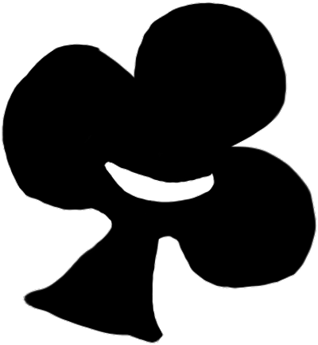

I build real-time audio systems — the kind that have to answer while the music is still happening.
Computer Science and Music Technology at NYU, graduating May 2027. I work on Gil Weinberg's research team at the Georgia Tech Center for Music Technology, where I build the iOS client for HearMe. I spent spring 2026 at IRCAM in Paris on ambisonics and spatial audio, and I founded Clubs, which is live on the App Store.
I work on real-time and collaborative music systems — the parts that have to answer while the music is still happening.
2026
Winner, Audiotool Challenge
Four phones, one shared clock, one fused track. A generative model that could not hold tempo, measured and designed around.
Read →
Georgia Tech CMT · Weinberg group
An iOS app that builds a full arrangement out of what a musician actually played. Sole engineer on the mobile client.
Read →
IRCAM, Paris
A piece written, recorded and mixed in three dimensions rather than mixed down into them. Second-order ambisonics.
Read →

Founder · covered in WSN
A platform for finding people to make things with. Swipe discovery, AI matching, real-time channels.
Read →
Cooking Pot
I release music under several names — rap, avant-garde jazz-rock, electronic. Guitar and modular synthesizer; production, engineering and mixing. The engineering and the music are not separate practices; each is why the other is interesting.
NYU · Brooklyn
B.M. Music Technology (Steinhardt), second major in Computer Science (CAS), minor in Mathematics. Coursework in digital signal processing, machine learning, numerical computing, artificial intelligence, analog and digital electronics, and Max/MSP.
Interests: real-time audio DSP, on-device inference, spatial audio, music information retrieval, interactive performance systems.